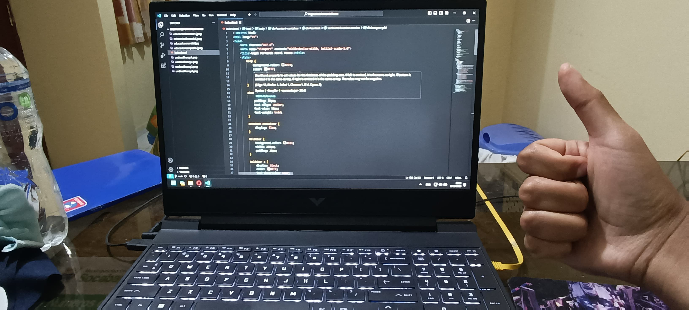

INICIO
¡Bienvenido a mi página web! Soy Angel Fernando Pacsi Ponce, estudiante de Ciencia de la Computación de 18 años. Aquí comparto mi experiencia en esta carrera y mi deseo de compartir y seguir aprendiendo conocimientos sobre programación, desarrollo y tecnología.
ACERCA DE MI
Mi interés en el mundo de la computación comenzó a temprana edad, cuando recibí mi primera computadora a los 7 años. Esta experiencia inicial me llevó a explorar y aprender por mi cuenta sobre el funcionamiento de las computadoras. A medida que crecía, me volví autodidacta en la resolución de problemas técnicos y ayudaba a amigos y familiares cuando se enfrentaban a desafíos similares. Mi curiosidad y amor por la tecnología me llevaron a considerar una carrera en Ciencia de la Computación.
EDUCACIÓN
Mi educación formal comenzó en 2012 cuando ingresé a la escuela primaria en el colegio Padre Francois Delatte, donde pasé gran parte de mi vida académica hasta el tercer año de secundaria en 2020. Con el objetivo de mejorar mi educación, continué mis estudios en el colegio Mendel durante el cuarto y quinto año de secundaria en 2021 y 2022. Actualmente, estoy en el segundo semestre de la carrera de Ciencia de la Computación en la Universidad Católica San Pablo.
Páginas de educación
PROYECTOS
En mi primer semestre universitario, emprendí la creación de un videojuego llamado 'Undead Frenzy', programado en Python. Aunque el proyecto no alcanzó las expectativas que tenía, fue una valiosa experiencia de aprendizaje en mi viaje hacia la maestría en programación y desarrollo.
CONTACTO
Puedes contactarme a través de mi correo de estudiante: angel.pacsi@edu.ucsp.pe
PERFILES
Mi repositorio en GitHub está disponible en: https://github.com/AngelFernandoPacsiPonce
Mi canal de en YouTube está disponible en: Angel Fernando Pacsi Ponce
METAS
Mi principal meta es completar satisfactoriamente mi carrera en Ciencia de la Computación, adquiriendo un profundo conocimiento en el campo y aprovechando cada oportunidad de aprendizaje que se presente.